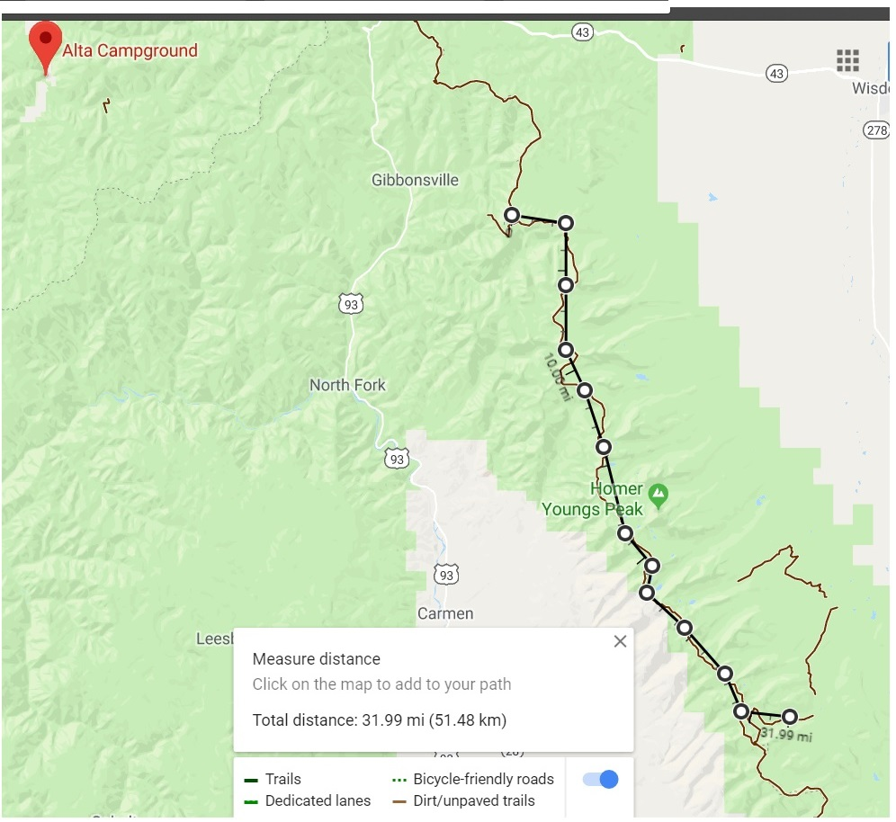

Cycle the Continental Divide
Join us on our annual cycling event.
2018 Dates:
August 20 - 23
August 25 - 28
September 5 - 8
September 10 - 13
Routes:
Trail 3
Trail 2
Trail 1
Costs:
Trail 3 - $460
Trail 2 - $375
Trail 1 - $325
Basic Requirements
- 10+ years of biking experience on unpaved trail
- Must be able to provide own gear and equipment
- Must be at least 18 years old
Click here to register
For more information, please send a contact us form with your questions.